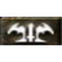
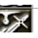
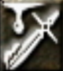
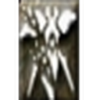
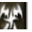
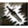
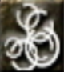
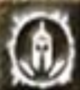

※ 다크엘프 스킬 카드 형식과 동일한 구조로 통일합니다.
다크엘프 스킬
| 이미지 | 스킬명 | 소모 | 설명 | 획득 방법 |
|---|---|---|---|---|
 | 드레스 마이티 | 소모 MP 10 | 시전하면 960초(16분) 동안 술자에게 STR+3의 효과가 적용된다. | 하급마법상인 판매 |
 | 쉐도우 아머 | 소모 MP 12 | 시전하면 960초(16분) 동안 술자에게 MR+5%의 효과가 적용. 참고로 캔슬레이션에 지워지지 않는다. | 하급마법상인 판매 |
 | 인첸트 베놈 | 소모 MP 10 | 시전하면 320초 동안 술자의 무기에 독 속성이 부여. 일정 확률로 타격에게 커스 포이즌(중독)의 효과가 적용. | 하급마법상인 판매 |
| 버닝스피릿츠 | 소모 MP 20 | 시전하면 300초(5분) 동안 일정 확률로 술자의 물리 대미지에 1.5배의 효과가 적용된다. | 중급마법상인 판매 | |
| 무빙 악셀레이션 | 소모 MP 10 | 시전하면 960초(16분) 동안 술자에게 이동 속도 1.5배의 효과가 적용. 이 효과는 속도 향상 물약의 효과와 중복된다. | 하급마법상인 판매 | |
 | 더블브레이크 | 소모 MP 20 | 192초 동안 일정 확률로 술자가 착용한 무기에 대미지 2배의 효과가 적용된다. 이도류나 크로우에만 효과가 적용된다. 발동 확률은 45레벨부터 5레벨 당 1%씩 상승한다. 베이스 스탯, STR 스탯, 레벨 등 무기 외적인 요소에 의한 데미지 보너스에는 적용되지 않는다. | 중급마법상인 판매 / 드랍 |
 | 드레스 이베이젼 | 소모 MP 15 | 시전하면 32초 동안 술자에게 ER(원거리 회피)+18의 효과가 적용된다. 캔슬레이션에 지워지지 않는다. | 드랍 |
 | 쉐도우 팽 | 소모 MP 20 | 시전한 후 인벤토리에서 근거리 무기를 선택하면 192초 동안 선택한 근거리 무기에 근거리 대미지+5의 효과가 적용된다. | 드랍 |
| 파이널 번 | 시전하면 대상에게 강력한 데미지를 가한다. 단, 이 마법을 사용하면 HP는 1, MP는 1만 남는다. 시전자의 HP가 100 이하일 경우 사용할 수 없다. | 드랍 | ||
 | 엔케니 닷지 | 소모 MP 20 | 시전하면 192초 동안 술자에게 DG(근거리 회피)+60의 효과를 준다. 참고로 캔슬레이션에 지워지지 않는다. | 드랍 |
 | 아머 브레이크 | 소모 MP 50 | 8초 동안 대상(PC)이 맞는 근거리 물리 데미지가 58% 증가. 상대보다 레벨이 높을 경우 성공 확률이 증가하며 캔슬레이션에 지워지지 않는다. | 드랍 |